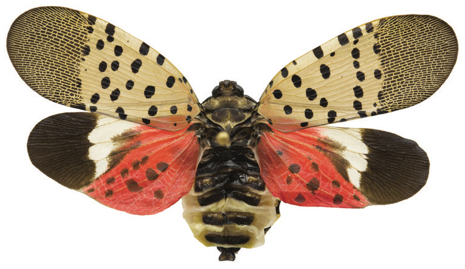

Spotted Lanternfly, photo by Nick Sloff
I use computational methods to study the ecology, impacts, and management of dynamic species at large scales. I work on the optimization of management and surveillance for species with dynamic ranges, includng for invasive pests and trees undergoing climate-induced range shifts. I’m interested in creating better forecasts of future movement patterns, and better recommendations for invasive species management.
I am currently an NSERC postdoctoral fellow in Joe Bennett's lab at Carleton University. I work in collaboration with Canadian government agencies, including Natural Resources Canada- Canadian Forest Service (NRCan-CFS) and Environment and Climate Change Canada (ECCC).
I’m also a member of the InvaCost project. InvaCost is an up-to-date, global-scale data compilation for economic cost estimates associated with invasive species. The project has gathered experts on various aspects of biological invasions to further take advantage of the database and analyze the data it contains.
Learn more about my work from my recent IPRRG webinar and coverage of my work on CBC's Quirks and Quarks.